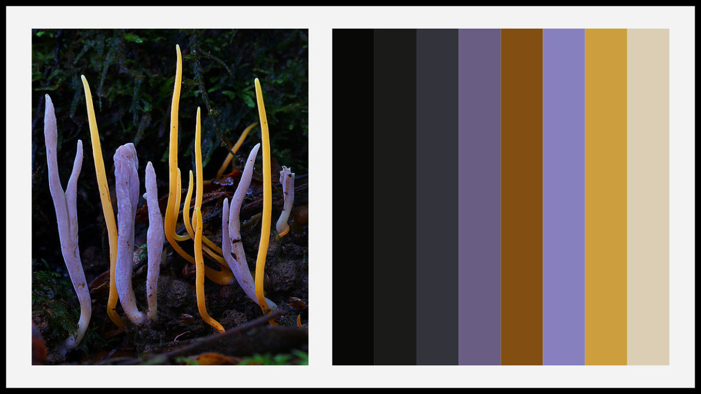

ClipKIT
Since the early 1990's, there has been one predominant guiding light for multiple sequence alignment trimming - the removal of phylogenetically uncertain or highly divergent sites. Here, we propose an alternative strategy wherein sites with phylogenetic certainty are retained and others are removed. Our benchmarking analyses show that ClipKIT is a reliable and top performing software.
Documentation
Github repository
JPEG2ColorPal

Ever wanted to obtain a color palette from your favorite image? Using JPEG2ColorPal.R, you can make that dream come true! JPEG2ColorPal.R takes as an input a JPEG and an integer (n). The software will output a color palette with n colors as well as the hex codes of every color generated.
Software page
treehouse
Sometimes phylogenies are so large it is challenging to determine the relationships among a subset of taxa. To remedy this issue, I introduce treehouse, a user friendly shiny app that allows users to obtain subtrees from the phylogenies in our treehouse.
Software page